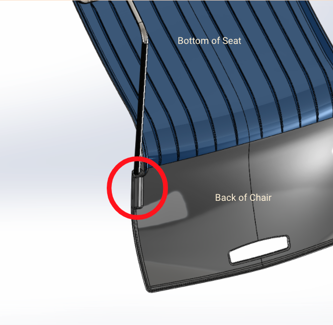
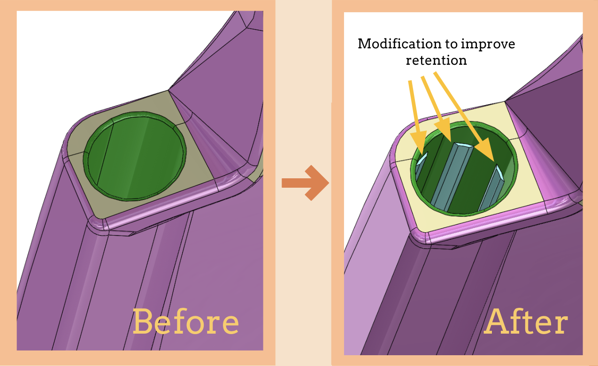
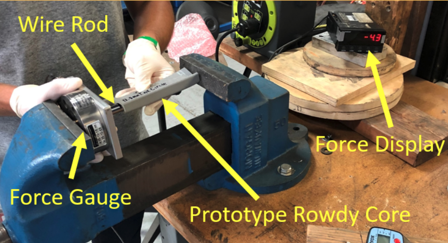
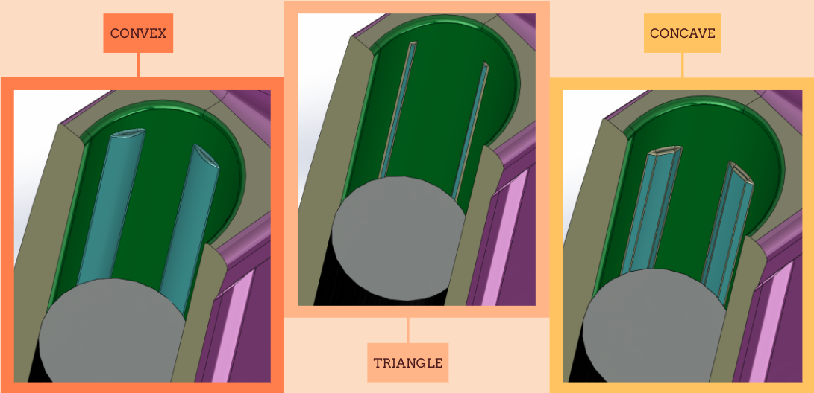
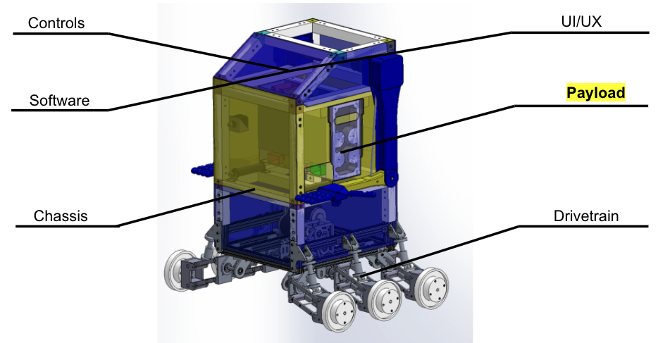
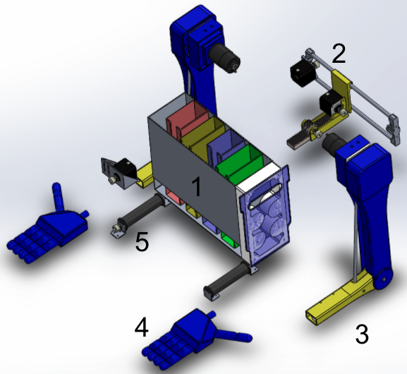
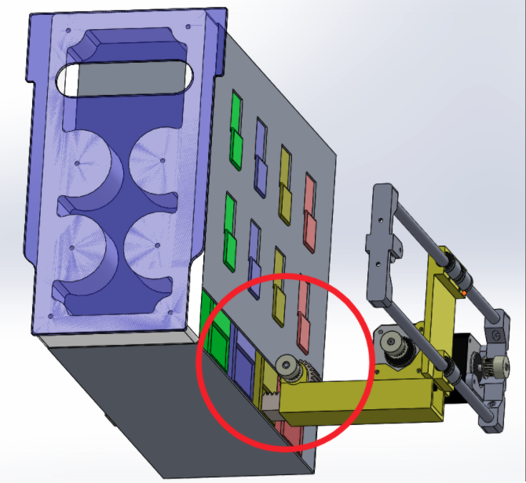
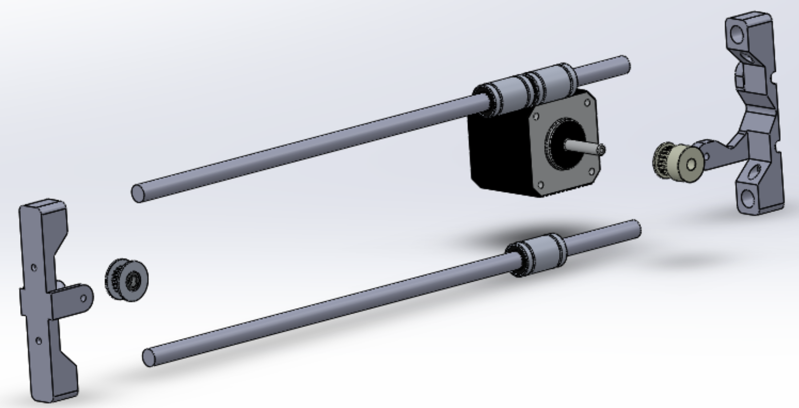
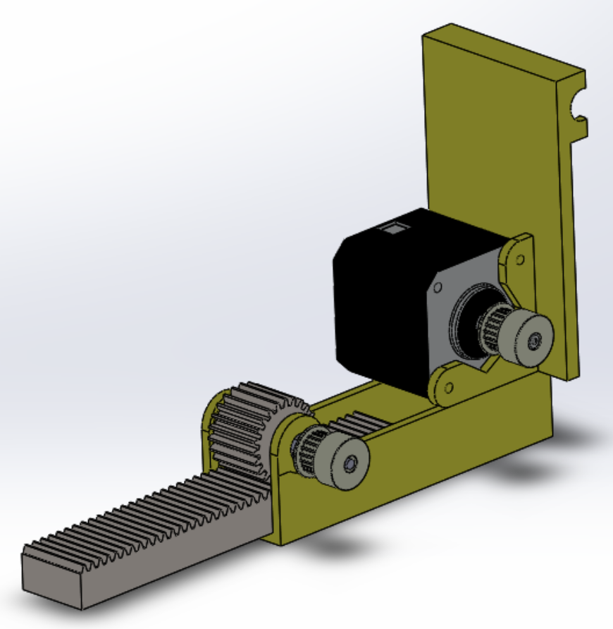

Corti-Cleaner Tool

Figure 1.1: The body of the tool (3) fits easily inside of the hand and the size of the wire loop is operated by sliding the nub (1). Although not shown in this image, wire loop comes out of the modified cannula (2), which is essentially a very small tube. Wiring to power and control the DC motor inside the tool (4) leaves out the back.

Figure 1.2: The top of the body of the tool removes give access to the internals. The DC motor (1) rotates the wire loop (3) and slides through the channel inside the body to retract and lengthen the wire loop. The rotation of the motor is translated through a copper coupler (2) to the wire loop.
Cataract surgery, while considered to be a very safe surgery has many of its small number of injuries during a specific portion of the surgery called phacoemulsification. During this portion of the surgery, the cloudy lens is broken down into small pieces and then sucked out of the eye through an irrigation and aspiration tool. Oftentimes, pieces of the lens are stuck to the delicate posterior wall of the lens capsule (where the lens sits inside of), and when bringing the irrigation and aspiration tool close to get these pieces the suction can tear the lens capsule.
I was tasked with designing and prototyping an alternative hand tool under the supervision of Dr. Gerber to completely blend up the lens capsule (even the pieces stuck to the posterior wall), so that the pieces of the lens can safely sucked out of the eye without having to get close to the lens capsule. The hand tool features a finger operated sliding DC motor that spins a wire loop of varying strength and ductility (currently testing fishing wire and copper wire) inside the lens capsule. The finger slide allows the wire to be retracted on entry into the eye and then when inside the eye, the wire loop expands to fill the lens capsule and break apart the lens.
I have gone through two main iterations of the tool, as shown in the pictures. The first iteration was much more robust, chunky, and complex than the final sleeker prototype because after talking with a surgeon, he favored the doctor having direct control of the retraction with their finger over motorized retraction with buttons. He also commented on the importance of a small diameter and pen-like shape, since that is what surgeons are used to and causes the least visual obstruction.
We have been able to complete the first iteration of the prototype by attaching a medical blunt tipped cannula (essentially a really small metal tube) to the 3D printed frame I designed in Solidworks. It was tested on a pig eye and showed promising results with the copper wire, except that it is not able to retract and extend easily to fill the lens capsule. The fishing wire was too flimsy to emulsify the lens.
In the future we are looking into compliant mechanisms to eliminate the need for any wire and have a stronger and more reliable “loop” that fills the lens capsule and retracts very easily. I really look forward to this tool making cataract surgery safer and easier!
Chair Alterations to Improve Chair Leg Retention

Figure 2.1: This highlights the section of the chair, the core, that I made modifications too. Specifically, the connection between the metal leg rods and the plastic polypropylene seat of the chair. I only highlight one of them but there are two of these cores mirrored on the other side of the chair.

Figure 2.2: Both of these images are of the core of the chair without the metal rod inserted. Before modifications, the metal leg rod would inserted into the cylindrical hole and hot glue would be used to keep the rod in. The modifications shown are polypropylene ribs added to create an interference fit to remove the need for hot glue.

Figure 2.3: This is the setup for max insertion force testing used to compare the various different modifications made. We simply setup the metal rod and prototype core against a force gauge inside a vicegrip and slowly tightened the vicegrip, pushing the metal rod into the core. We then looked at the force display and recorded the max insertion force before the metal rod hits the bottom of the core.
Summer of 2020, I had the amazing chance to intern at Exemplis LLC, a company that specializes in making custom office chairs, desks, and various other desk supplies. In this specific project, I work on fixing a problem of the Rowdy chair squeaking when people sit in them. This sqeuaking is attributed to the use of hot glue being put in the hole to hold the metal rod and plastic body together.
As shown in Figure 2.1 and Figure 2.2, I made alterations in Solidworks to a section of the plastic polypropylene chair called the core, the small red highlighted section in which the metal legs of the chair insert into the plastic body. The modifications made were the ribs added to the interior of the core (as shown in Figure 2.2) that created an interference fit with the metal rods, removing the need for hot glue to hold the pieces together.
Since the polypropylene body of the chair is produced from injection molding into a very expensive tool, there were a lot of requirements to consider to make sure the ribs were even able to be injection molded. First, the "core" actual refers to the part of the injection molding tool that shapes the inside of the cylindrical hole (what I have been calling the core). It was important to design ribs and the entire hole at a slight angle so that the opening of the hole is slightly wider than the bottom of the hole. This prevents suction from being created when the core is removed from the hole during the molding process. Second, all sharp edges and corners had to be filleted since it is not possible to machine perfect sharp edges/corners into the core. Third, since modifying a tool is very expensive (around $20,000) it was important to make the alterations "steel-safe", which essentially means that instead of making a completely new core, we are able to grind down the original core to create the ribs (since adding more material to the chair body is a reduction in the material of the tool).
The convex design was the design that I was originally given by my boss since it is what is generally used in the industry and I was tasked with finding two other potential designs. In the max insertion force tests shown in Figure 2.3, I found that the concave design had the median max insertion force (which directly correlates with the removal force) and had the smallest change in force as the rod inserted into the core (meaning that the rod would be held most consistantly even if it started to come out).
Although my internship has ended, Exemplis is currently in the process of transitioning to my concave design and is expected to be installed January 2021! It will be amazing to see the results of this work and see if it can removing the annoying squeak from the chairs that has existed for several years.

Figure 2.4: These are cross sectional views of the three different designs that I tested; The metal rod is cut off and the core is split open so that the different rib designs are visible. The convex design is essentially small arcs arcs of circles that interfere with the metal rod. The triangle design features trianglar ribs that had the least amount of interference of the three designs. The concave design was the most notable design as the inside profile of the rib was concentric with the metal rod and had the most optimal amount of interference.
BruinBot Payload Dispensing System

Figure 3.1: The BruinBot is a small campus roving robot that drives around interacting with students by saying hi, giving fist bumps, and handing out snacks. The project is split into 6 major subteams and I was a part of the payload subteam which was responsible for creating a system to hand out snacks.

Figure 3.2: The payload system is split into 5 main sections and I was mainly responsible for section 2. Section 1 is the container that housed stacks of granola bar shaped snacks (each different colored container in section 1 is a different vertical stack of granola bar shaped snacks). Section 2 the system for pushing the granola bar shaped snacks out of section 1 and onto the conveyor belt (section 5). Sections 3 and 4 are the arm and hand that catch the granola bar shaped snacks that come off of the conveyor belt and bring them up for students to grab. Section 5 is the conveyor belt that brings the bars from section 2 to the hands.

Figure 3.3: This is the back view of section 2 pushing the granola bar out of section 1. These are usually attached to the walls of the chassis, but the chassis is not shown so that the payload section is visable.

Figure 3.4: This figure shows the linear track that I designed based to allow the linear pusher (shown in figure 3.5) to move side to side. This is operated by a stepper motor that runs a timing belt that moves the linear pushing on linear bearings along two smooth rods.
During my 2nd year, I was a part of X1 Robotics, an American Society of Mechanical Engineering (ASME) student-led project team, and we designed and built BruinBot! As I described in Figure 3.1, BruinBot is a small campus roving robot that drives around interacting with students by saying hi, giving fist bumps, and handing out snacks. I was on the payload subteam which was responsible for handing out snacks, high fiving, and fist bumping students. The whole payload system is shown and described in Figure 3.2.
I was responsible for creating the system to push the granola bar shaped snacks out of the container and onto the conveyor belt (shown together in Figure 3.3). I got inspiration from the x-axis of a 3D printer and created a linear track driven by stepper motor timing-belt framework (shown in Figure 3.4) that would allow for the pusher (shown in Figure 3.5) to accurately move laterally. Once the pusher is positioned using the linear track, then the linear pusher uses a simple rack and pinion system to push the rack forward and into the granola bar shaped snacks.
Sadly, due to COVID-19 the last quarter of my second year was completely remote, we were only able to finish designing Bruinbot. All of the labs closed down and are still closed down so we have not been able to build Bruinbot. Hopefully UCLA will reopen soon and we will be able to get back to safely building Bruinbot!

Figure 3.5: This figure shows the rack and pinion linear pusher that pushes the granola bars out of section 1. Although not shown, the stepper motor is attached to the pinion by a timing belt.